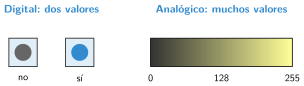
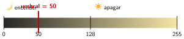

Entradas: botones, luz y temperatura
🤔 Pienso5 min
Qué hago aquí: Piensa un momento y contesta con lo que ya sabes. No pasa nada si no lo sabes: es para empezar.
Prueba en la placa: para siempre, mostrar número nivel de luz. Anota el número sobre la mesa y al taparla con la mano.
📖 Leo y aprendo15 min
Qué hago aquí: Lee despacio, mira los dibujos y los ejemplos, y quédate con la idea clave del final.
Los sensores son la entrada. Miden algo y lo pasan al programa.
Hay dos tipos de sensores:

Los botones usan eventos. El bloque al presionarse el botón A se ejecuta cada vez que pulsas A.
Con un sensor analógico decidimos con un umbral. Por ejemplo: si la luz es menor que 50, es de noche.

✏️ Hago25 min
Qué hago aquí: Haz las actividades en orden. Empieza siempre por las básicas.
Marca si es digital (D) o analógico (A).
Haz un programa: al pulsar A, muestra la temperatura. Al pulsar B, muestra la luz. Anota lo que sale.
Copia el contador de personas. Pruébalo pulsando A cinco veces.
Copia la lámpara de noche. Tapa la placa con la mano. ¿Se enciende?
Prueba la lámpara con los umbrales 20, 50 y 100. ¿Cuál funciona mejor en tu clase? ¿Por qué?
✏️ Puedes responder escribiendo, con un dibujo o un esquema, o contándolo en voz alta.
Arregla el programa. Esta lámpara se enciende al tapar la placa, pero después ya no se apaga nunca. Ábrela, pruébala en el simulador y busca qué le falta.
💻 Ábrelo en MakeCode El programa se abre en MakeCode, listo para probar y cambiar.
🚀 Amplío (si quieres saber más)
Qué hago aquí: ¿Has terminado? Lee la curiosidad o elige el reto. Es voluntario.
Haz un termómetro: cara sonriente si la temperatura está entre 18 y 25 °C; cara triste si no. Pista: en Lógica está el bloque y.
✅ Compruebo5 min
Qué hago aquí: Contesta sin mirar la ficha y marca cómo lo llevas.